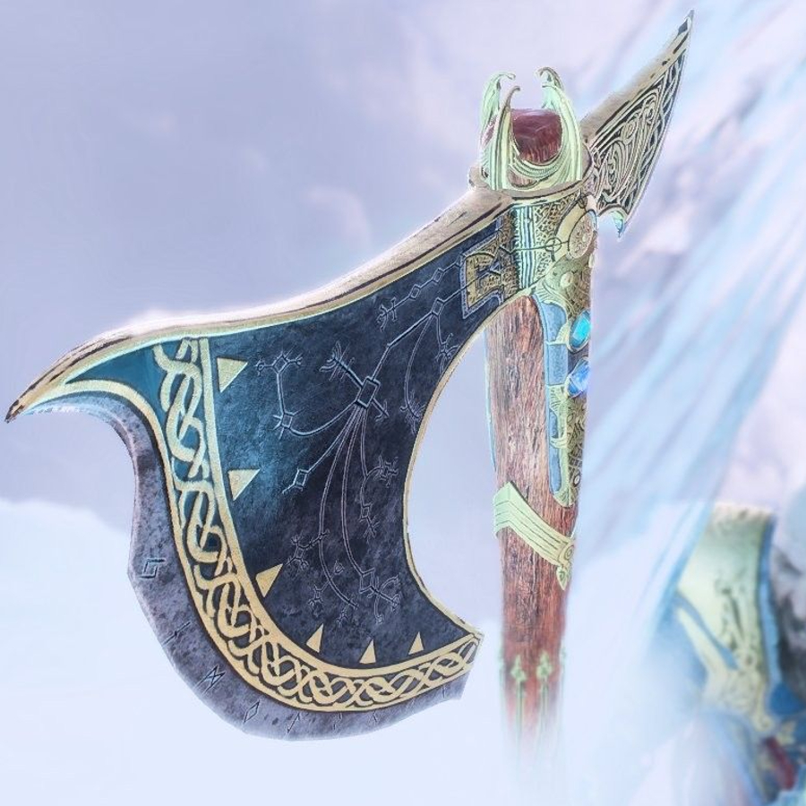
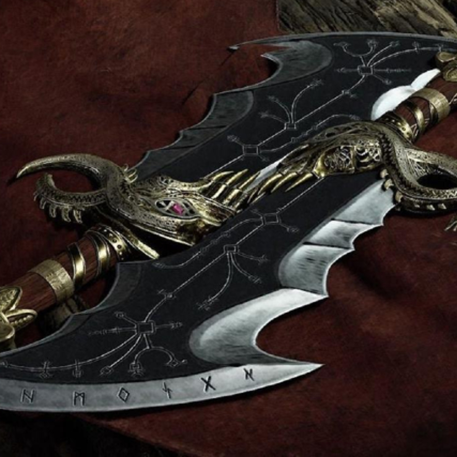
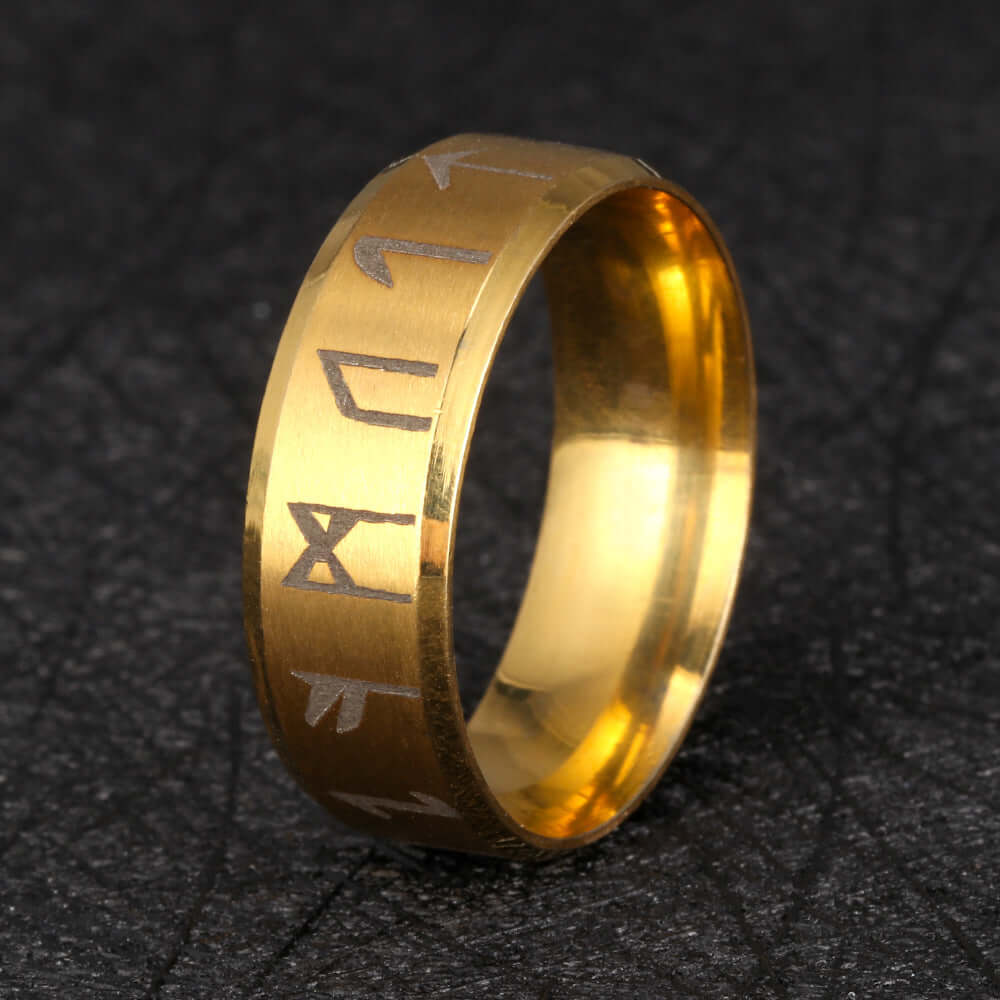

Kratos (Greek: Κράτος), known by the Jötnar as Fárbauti (Nordic: ᚠᚨᚱᛒᚨᚢᛏᛁ), is the protagonist of the God of War series. Born in Sparta, Kratos is a demigod son of Zeus and is later a full God himself by becoming the titular God of War, with incredible superhuman god-like power and combat skills. Kratos was once a respected soldier and Spartan General, until he lost his wife and daughter when he killed them, albeit by accident, under Ares' command, earning him the nickname of the "Ghost of Sparta", after which he renounced his service to the War God, eventually killing him and ascending to Godhood by becoming the new and full "God of War". Kratos, as the God of War, began to exact revenge against his father, the Olympians and the Titans who betrayed him, remaining forever a full god in the process before departing to another realm.
After successfully exacting his vengeance, Kratos escaped into the world of Norse Gods by settling down in Midgard in Ancient Norway where he married another woman named Faye and bore a son named Atreus who together, after the boy's mother’s death, would embark on a journey to spread her ashes at the highest peak of all the nine realms.
The Leviathan Axe is introduced in God of War (2018) as Kratos’ main weapon throughout the Norse Era. Specifically forged by the blacksmiths Brok and Sindri to fight off the power of Mjölnir, the Axe has been granted to the Guardian before the latter offered it to Kratos prior to her death.
The Blades of Chaos are introduced in God of War as Kratos’ signature weapons throughout the Greek Era. Forged in the depths of the Underworld and personally offered to Kratos by Ares himself, the Blades became a symbol of the Spartan’s servitude to the Olympians, emphasized by the chains bound to the very flesh of Kratos. Widely feared throughout Greece, the Blades of Chaos personified what Kratos had become during the darkest period of his life: a monster who killed his own family out of bloodlust, turning him into the infamous Ghost of Sparta.
The Draupnir Spear is introduced in God of War: Ragnarök as Kratos’ new signature weapon, and the first that truly was his. Forged in Svartalfheim by the Lady of the Forge using Odin’s legendary ring Draupnir, and fuelled with Kratos own blood, this masterpiece magically able to replicate itself honors the General Kratos has become, allowing him to renew with his Spartan heritage and the values it represents: discipline, strength and honor.
